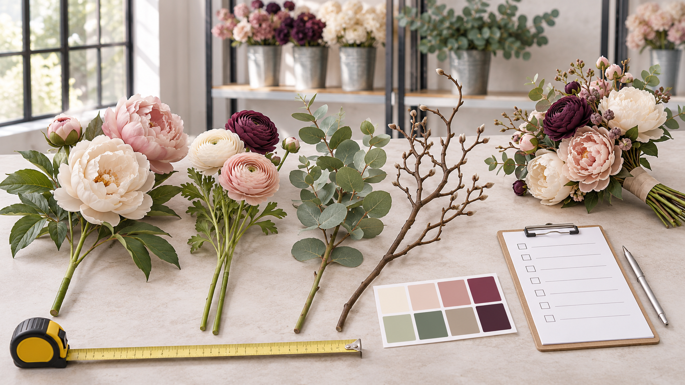
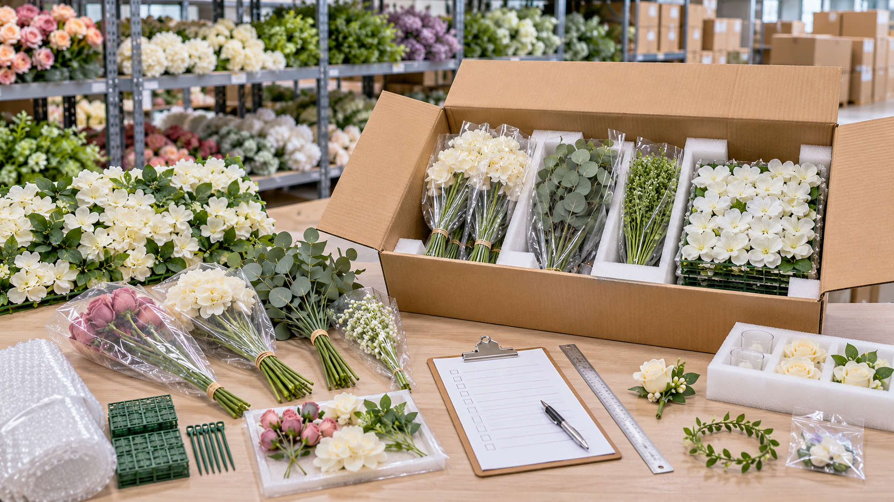

Direct answer: Treat 2026 artificial-flower trends as an assortment brief, not a reason to buy every variety. Buyers are using sculptural focal blooms, garden-like meadow textures, restrained monochrome palettes and reusable event pieces across home, hospitality and wedding settings. Test one use case at a time, approve physical samples and colour references, then control stem, head, bundle and carton quality before consolidation.

1. Build a current assortment around a use case
Current floral styling favours expressive, sculptural arrangements alongside intentionally simple monochrome or single-variety moments. Wedding coverage also points to meadow-like centrepieces, trailing forms, statement greenery and installations that create atmosphere rather than generic flower walls. For a wholesale buyer, the useful takeaway is to create small, usable systems: a home-vase programme, a seasonal shelf refresh, a ceremony collection or reusable hospitality arrangements.
Start with a focal stem, a supporting flower, greenery and a branch or texture element. This allows customers to make an arrangement without buying an unplanned mix of individual stems. Keep a core palette available year-round, then add short seasonal colour stories in smaller quantities.
2. Specify material, finish and colour before comparing quotes
Two artificial flowers can share a name but differ widely in petal fabric, moulding, print, stem wire, leaf finish and head density. Put a photo, desired dimensions, material/finish, colour reference, bundle quantity and end use in the supplier brief. For arrangements sold as a set, define the number and type of stems rather than ordering by total bunch weight.
| Control point | Why it matters | Buyer check |
|---|---|---|
| Flower head and petal finish | Realism and display value depend on shape, edge finish and attachment. | Compare the approved sample at close range and from display distance. |
| Stem, wire and leaf construction | Stems must bend, cut or arrange as intended without sharp exposed wire. | Check length, flexibility, joins and wire-end protection. |
| Colour and dye variation | Mixed cartons can look inconsistent under retail or event lighting. | Approve a sample palette and acceptable shade range. |
| Bundle and inner pack | Controls merchandising, pick-and-pack and freight handling. | Confirm stems per bundle and protective sleeve method. |
| Outer carton | Crush damage can flatten heads and bend stems before display. | Approve carton fill, separators, orientation and carton marks. |
3. Use a physical sample and a colour record
Screen colours are not enough for an assortment that must sit together. Approve a physical sample where possible, photograph it under consistent neutral lighting and record the flower, colour name, material, stem length and head size. If an exact Pantone or buyer swatch is supplied, treat it as a reference to compare rather than a promise that every fabric or dye lot will match identically.
For a large project, set an approval gate before production or purchase. It is cheaper to adjust the palette or a head shape at sample stage than after hundreds of bundled stems have been received.

4. Inspect display quality and export readiness together
QC should follow the approved sample and packing plan. Check stem length, head diameter, petal attachment, visible glue, leaf and print finish, colour consistency, odour, wire safety, quantity per bundle, sleeve condition and carton count. Pull samples from more than one carton, especially for a mixed colour or mixed supplier order.
Before consolidation, record expected carton counts by supplier and match receiving to the packing list. Use the pre-shipment inspection checklist for the inspection workflow and the carton marks and packing-list guide to keep each carton traceable through export handoff.
5. Plan reuse and replenishment without overclaiming
Artificial flowers are often selected because they can be styled repeatedly, but reuse depends on careful packing, storage and handling. Build a replenishment list that identifies core stems, seasonal colours and replaceable components. Describe material and care accurately; do not make environmental, fire-retardant or UV-resistance claims unless the product and documentation support them for the intended market.
YiwuBridge can compare supplier options, coordinate samples and QC, document warehouse receiving and consolidate mixed cartons. Send product references, target setting, colours, stem quantities, packaging needs and delivery date through the RFQ form.
Frequently asked questions
Which artificial flower products are practical for a first order?
Begin with a coherent use case such as everyday home stems, a seasonal retail palette, a small wedding collection or hospitality arrangements. Test a limited number of focal flowers, fillers and greenery instead of a broad random mix.
How should a buyer approve artificial flower colour?
Approve a physical sample or a controlled reference photograph, identify the material and finish, and compare the full order under consistent neutral lighting. Record which shade variation is acceptable before production or purchase.
What should artificial flower QC include?
Check stem length, head diameter, petal attachment, colour consistency, wire safety, leaf finish, odour, glue marks, quantity per bundle, protective sleeve, carton fill and crush protection against the approved sample and packing brief.
Build a controlled artificial-flower brief
Send references, target use case, colour palette, stem quantities, packaging needs and timing. YiwuBridge can help compare supplier options and organise samples, QC and consolidation.